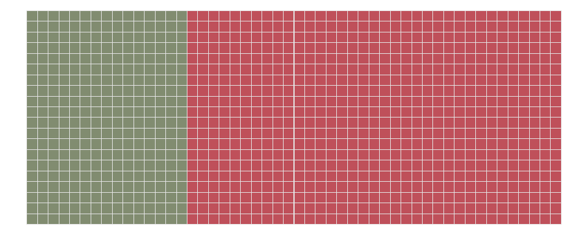
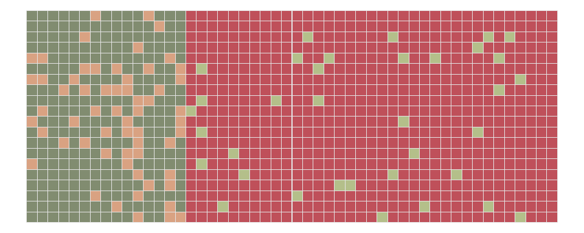

Code
library(ggplot2)
library(reshape2)
k = 1000
COLORS = c("#BF505A", "#D9A282", "#818C70", "#B4BF8A")Simon Schwab
December 15, 2024
Science has a high credibility and reputation. The public, the media, and politicians usually believe a scientific result is true. After all, it is science. If we don’t believe in science, what should we believe in? However, scientific findings are sometimes based on weak statistical results. I will focus on the widespread misunderstanding of the p-value.
The problem is not that people use p-values poorly. It is that the vast majority of data analysis is not performed by people properly trained to perform data analysis. —Jeff Leek
I would say it slightly differently. The vast majority of data analysis is performed by people who are not properly trained. Therefore, p-values are indeed used poorly as a consequence.
The poor understanding and misuse of p-values caused the American Statistical Association (ASA) to release a statement in 2016 [1]. The ASA argued that the p-values are commonly misinterpreted. Many researchers believe a low p-value is some form of insurance that the result or study is credible and worth publishing. A scientific result is worth publishing when the study was well planned, designed, conducted, and reported. A study protocol with a statistical analysis plan can help with this. The p-value in itself does not matter at all. In a perfect world, we see mostly high-quality studies with both low and high p-values. The opposite is true; there are too many low-quality studies, and too many studies report exclusively low p-values.
The p-value is a measure of how compatible the data are with a specified model. This model is under the null hypothesis, which often says that there is no difference between two groups or there is an absence of a relationship between a variable and an outcome. The smaller the p-value, the greater this incompatibility of the data with the null hypothesis. Thus, a small p-value may then provide evidence against the null hypothesis.
Here is how the ASA explained the p-value:
Informally, a p-value is the probability under a specified statistical model that a statistical summary of the data (e.g., the sample mean difference between two compared groups) would be equal to or more extreme than its observed value. —ASA Statment
In other words, it is a probability statement about the data and not about the truth of a hypothesis. The most common misunderstanding is that a p-value of 0.012 reflects a 1.2% probability that the null hypothesis is true or that the data were produced by coincidence. These interpretations are not correct. Most researchers may not be aware that the commonly used alpha level of 5% is absolutely no guarantee that the result is not a fluke. In fact, p-values, the alleged gold standard of statistical validity, are not as reliable as many researchers believe [2].
When looking at the body of, for example, medical research, I wonder, how many results are really true? How many results are not? Unfortunately, the answer may not be very amusing [3–5].
To get an approximate answer for a specific situation, I considered 1,000 studies; each was well-designed and conducted. I assumed the widely used alpha level was 5%, meaning that in 5 of 100 studies where there was no effect, I found a positive result. This is known as the type I error. Furthermore, I assumed all the studies had a statistical power of 80%. Thus, among the studies where there really was a true effect, I would find it in 80 of 100 studies. Consequently, in 20 out of 100 studies, however, I would miss the true result. These were the false negatives, also known as the type II error. My last assumption was about the question, how many hypotheses were really true? I assumed a study area where a good number of hypotheses turned out to be true, say, 3 in 10.
Imagine 1,000 hypotheses under investigation, where 3 in 10 were true. Thus, 300 were true, and 700 were false. Of the 700 false hypotheses, I found 5% to be falsely positive, which was 35. From the 300 true hypotheses, I found a positive result in 80% of the cases, which were 240. Altogether, I saw 35 and 240 results as positive results; however, 35 were false, which was 13%.
I used the common alpha level of 5%, but 13% of the results were wrong. This really is the best-case scenario with an alpha level of 5% and a statistical power of 80%. The reality is much worse.
In reality, the reported standard errors and p-values are often biased. The reason is that data is often reanalyzed until the desired result was obtained. Thus, many reported results probably have a much higher p-value than if data were analyzed according to a prespecified protocol. The 5% alpha level is maybe 10% or higher. Furthermore, the statistical power of 80% is from a perfect world, and this assumption is not realistic at all, even in the domain of the highest standards, such as clinical trials [6]. I don’t know what the true statistical power might be; maybe it is as low as 50%. Lastly, there are domains where true hypotheses are not so prevalent, for example, where only 1 in 10 hypotheses are, in fact, true.
Making a scientific claim in a domain where novel findings are hard to discover, where p-hacking is prevalent, and where sample size calculations and statistical power are dismissed makes a result very unlikely to be true, even if the p-value is statistically significant.
When I look at a p-value, I don’t see it solely in terms of whether it is statistically significant. I put it in some context and ask myself, can I believe a finding when taking other information into the equation, for example, the study design, the sample size, the statistical analysis, and how results have been reported? If I had no skepticism and just looked at the magnitude of a p-value, ignoring everything else, I might just as well believe in Santa Claus.
Or let me take a better example. Ignoring the story behind a p-value and taking it at face value would be like waking up one morning with a headache and concluding that you have a rare brain tumor [2].
A brain tumor may be possible but very unlikely. So are the results of many scientific discoveries.
The title of this post is a song by Cindy Lauper. The preview image of this post is a photo by Drew Beamer on Unsplash.
Below, I used some plots to illustrate that p-values are not as reliable as many researchers believe. In these plots, each square was a hypothesis that was either true or false. Each hypothesis was tested by a study. Based on some assumptions about the proportions of true hypotheses, the alpha level, and the statistical power, I determined how likely a scientific result may be. This approach was strongly inspired by an article and video by the Economist [7].
# k: number of hypotheses
# p: prop. of true hypotheses
# alpha: alpha level
# power: statistical power
true_colors <- function(k, p_true, alpha, power) {
t = p_true*k
f = k - t
M = matrix(1:k, 20)
data = melt(M, varnames = c("row", "col"), value.name = "id")
data$H = "false"
data$H[1:t] = "true"
# true and false hypotheses
data$H = factor(data$H, levels = c("false", "fn", "true", "fp"))
# add false pos and false neg
data$H_ = data$H
fp = round(f*alpha)
idx = sample(which(data$H_ == "false"), fp)
data$H_[idx] = "fp"
fn = round(t*(1 - power))
idx = sample(which(data$H_ == "true"), fn)
data$H_[idx] = "fn"
pos = sum(data$H_ == "true")
neg = sum(data$H_ == "false")
fp = sum(data$H_ == "fp")
fn = sum(data$H_ == "fn")
fdr = fp / (pos + fp)
return(list(data = data, k = k, p_true = p_true, alpha = alpha, power = power,
pos = pos, neg = neg, fp = fp, fn = fn, fdr = fdr))
}
set.seed(2024)
mylist = true_colors(k = k, p_true = 0.30, alpha = 0.05, power = 0.80)I considered 1000 hypotheses. I assumed that 30% of the hypotheses were true, see Figure 1.

Imagine each hypothesis was tested by a study. Given an alpha level of 0.05, there were 35 studies that produced a false positive result (type I error). The studies also had a power of 80%; thus, 60 of the studies were false negatives (type II error), see Figure 2.

In reality, we see positive results, and we don’t know which are false. There were 240 positive results (green) and 35 false positive results (light green). The proportion of false positive results among all the positive results was 0.13; this is also known as the false discovery rate (FDR). Note that this error rate is more than double as high as the convenient alpha level of 0.05.
However, the assumptions above really came from a perfect world. I then used a more realistic setting, for example, assuming a scientific field where 1 in 10 hypotheses was true, with an alpha level of 0.10 and a statistical power of 50%.
In such a scenario, there were 50 positive results (green) and 90 false positive results (light green). Thus, 64% of all positive results were wrong. That was more than half of all the studies.
Many research results may be wrong. Only trust studies that were well designed, conducted, analyzed, and reported. Don’t take the p-value as a measure of credibility or importance of a result. By the way, the reader can use the function true_colors() to try out different scenarios.
@misc{schwab2024,
author = {Schwab, Simon},
title = {True Colors},
date = {2024},
url = {https://www.statsyup.org/posts/colors/},
langid = {en}
}